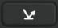
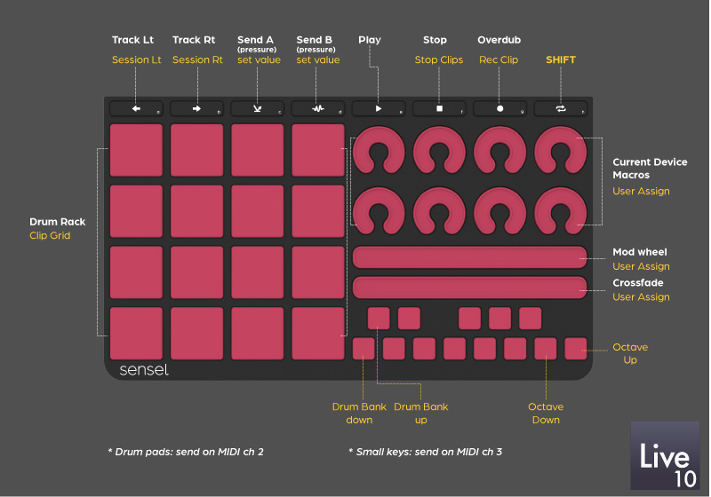
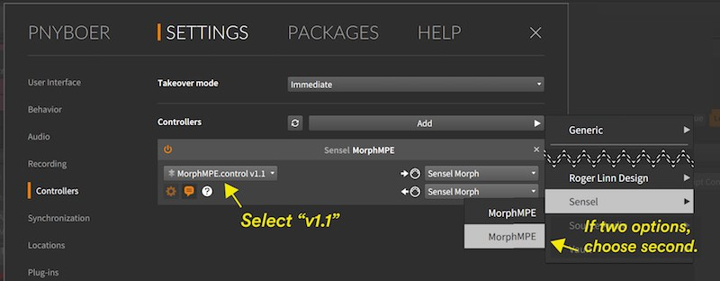
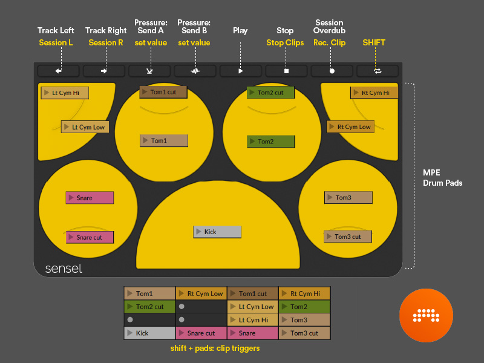
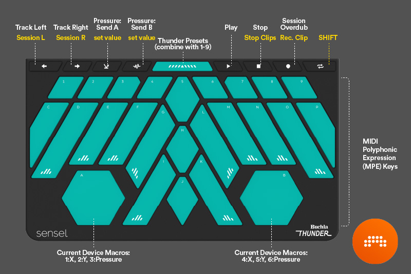
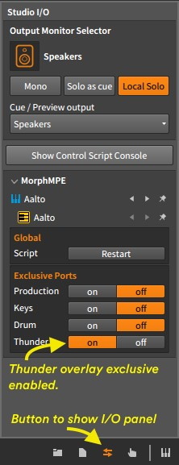
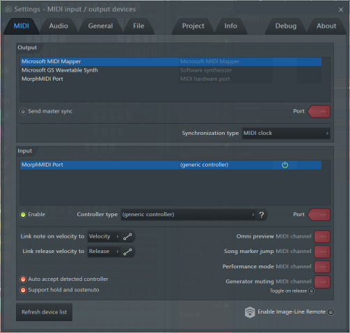
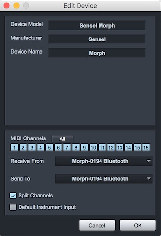
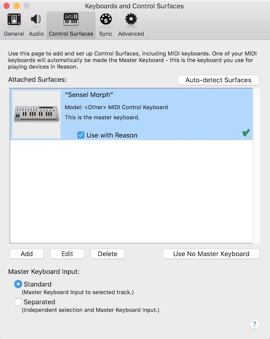
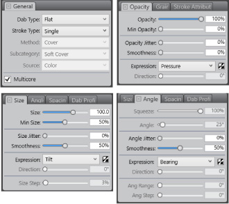

Software Setups
Music Software Guides
For the most part, when the Morph is used as a MIDI device, it shows up like any other MIDI keyboard or controller. However, there are some details worth documenting, since, with default mappings, each Overlay sends on a different channel. Before you proceed make sure you have a wired or wireless connection between your device and the Morph.
The below screenshots show the Morph used as a Bluetooth MIDI device, but the general instructions do not change for the wired case or for different operating systems.
Ableton Live

Open the Preferences window in Ableton Live and select the MIDI tab. If you just want to play the keyboard and drums, turn "Track" on for the input port. If you want to use controls and buttons for parameters and switches in Live, turn "Remote" on for the input port. At this time, there is no MIDI control of the Morph, so there is no need to activate "Track" or "Remote" for output.
In Ableton Live, you can filter MIDI input on tracks according to Channel. You may want to do this to ensure different Overlays are dedicated to different tracks.

Ableton Live 11 Control Surface
MPE in Ableton Live 11
We set up a comprehensive site that shows how MPE works in Ableton Live at mpe.design
Source Code
If you need the source code, or want to install manually, our github repo has all the necessary files. If you are working with Ableton Live 11, you will need to install the scripts manually from the repository.
Download, Install, & Setup
The script will work with Ableton Live version 11 only.
You can download it from the Sensel store:
The advantage of downloading from the store is that you will be notified of any updates.
If you need a direct download:
Run the installer for Mac or Windows. This will install:
Example Live set with sounds and instruments:
- Mac: ~/Documents/Sensel Morph/Ableton Live 11 Script Project/Sensel Live Remote Script Demo.alp
- Windows: \Users[username]\Documents\Sensel Morph\Ableton Live 11 Script Project\Project\Sensel Live Remote Script Demo.alp
Overlay maps for SenselApp:
- Mac: ~/Documents/Sensel Morph/Ableton Live 11 Overlay Guides
- Windows: \Users[username]\Documents\Sensel Morph\Ableton Live 11 Overlay Guides
Remote Scripts for Live:
- Mac: ~/Music/Ableton/User Library/Remote Scripts/Sensel_Morph_MPE
- Windows: \Users[username]\Documents\Ableton\User Library/Remote Scripts/Sensel_Morph_MPE
The installer has to assume that the User Library is in these locations. If you have your User Library installed elsewhere, you will have to move the installed script folder "Sensel_Morph_MPE/" and its contents to your "User Libarary/Remote Scripts" folder. If you are unsure where your User Library is located you can right click on "User Library" in the Live Browser and it will take you to the folder in your Finder (Mac) or Explorer (Windows):
Open the Preferences window in Ableton Live and select the MIDI tab. Select the "Sensel Morph MPE" as your Control Script. Select the Morph as the input and output device for the Control Surface. You will also want to enable the Morph for Track, Remote, and MPE input:
Flash The Morph with Maps
Use the guide below to program your Morph with the Overlay maps for Live 11.
How to Use It
We've re-mapped many of the top buttons on the Music Overlays to better match specific functions in Ableton Live. We've also added a "Shift" button - hold it down to access additional functions for the knobs, pads, and buttons.
Top button functions:
- select (and auto-arm) track to left of current track
- select (and auto-arm) track to right of current track
 transpose piano keys down octave (piano overlay only)
transpose piano keys down octave (piano overlay only)- transpose piano keys up octave (piano overlay only)
-  use pressure to control Send A dial on current track
- use pressure to control Send B dial on current track
 start playback
start playback stop playback
stop playback- enable overdub to record into MIDI clip
 shift - like "shift" on a typing keyboard - hold down to enable shift functions
shift - like "shift" on a typing keyboard - hold down to enable shift functions
Top button shifted functions:
- move session view box left
- move session view box right
- --
- --
- release after pressing shift to set Send A value
- release after pressing shift to set Send B value
- --
- stop clip on current track
- record track
Additional shift functions
- launch clips
- transpose drum rack
- transpose small keys on music production overlay
- user-assign knobs and sliders on music production overlay
Use the following illustrations as references for the functions in the script.

The Innovator's overlay can be used, with the bonus feature that you can create controls that automatically map to macros and other features. It has many of the same capabilities of the Music Production Overlay, if you use the same MIDI assignments. See the graphic above for an example on how this works. The .senselmap file that you can load onto your Morph is included in the installer and in the github repo.
Source code for this script is available on our GitHub site
Using Different Overlays
Unlike the Live 10 and Bitwig scripts, it is not yet possible to have individual overlays dedicated to a specific track or instrument in your Live set.
MPE in Live 11
The Sensel Morph is setup to use MIDI Polyphonic Expression (MPE) for all the Music Overlays. This means you can use plugins designed for use with MPE, such as Audio Damage Quanta, Madrona Labs Aalto, Arturia Pigments, UVI Falcon, and many more. Ableton has some instruments that support MPE: Sampler, Simpler, and Wavetable. You can learn more at mpe.design.
Ableton Live 10 Control Surface
Using our control surface script, the Morph and the music Overlays can provide automatic effect mappings and remote control over features in Live 10 to extend your productivity. Not only can you play instruments, but you can control effects on different tracks, use pressure to add send effects, launch clips, overdub, and more.
Video Tutorial
A complete video tutorial that covers all the below is available on our YouTube channel.
Source Code
If you need the source code, or want to install manually, our github repo has all the necessary files. If you are working with Ableton Live 11, you will need to install the scripts manually from the repository.
Download, Install, & Setup
The script will work with Ableton Live version 10 only. Live 9 is not supported. This script will not work with Live 11.
You can download it from the Sensel store:
The advantage of downloading from the store is that you will be notified of any updates.
If you need a direct download:
Run the installer for Mac or Windows. This will install:
Example Live set with sounds and instruments:
- Mac: ~/Documents/Sensel Morph/Ableton Live Script Project/Sensel Live Remote Script Demo.alp
- Windows: {userdocs}\Sensel Morph\Ableton Live Script Project\Project\Sensel Live Remote Script Demo.alp
Overlay maps for SenselApp:
- Mac: ~/Documents/Sensel Morph/Overlay Maps/
- Windows: {userdocs}\Sensel Morph\Overlay Maps
Remote Scripts for Live:
- Windows: C:\ProgramData\Ableton\Live 10\Resources\MIDI Remote Scripts
- Mac: Applications/Live 10/Contents/App-Resources/MIDI Remote Scripts
Notes: * if you want to verify the install for Mac, you can right click on the Live 10 application icon and "Show Package Contents" and navigate to the "MIDI Remote Scripts" folder.) * On Windows, make sure Ableton is installed in C:\ProgramData\Ableton. If you have it installed in a non-default location such as C:\Program Files\Ableton, the installer will fail.
Open the Preferences window in Ableton Live and select the MIDI tab. Select the Sensel Morph as your Control Script. Select the Morph as the input and output device for the Control Surface. You will also want to enable the Morph for Track and Remote input.

Flash The Morph with Maps
Use the guide below to program your Morph with the Overlay maps for Ableton Live 10.
How to Use It
We've re-mapped many of the top buttons on the Music Overlays to better match specific functions in Ableton Live. We've also added a "Shift" button - hold it down to access additional functions for the knobs, pads, and buttons.
Top button functions:
- select (and auto-arm) track to left of current track
- select (and auto-arm) track to right of current track
- transpose piano keys down octave (piano overlay only)
- transpose piano keys up octave (piano overlay only)
- use pressure to control Send A dial on current track
- use pressure to control Send B dial on current track
- start playback
- stop playback
- enable overdub to record into MIDI clip
- shift - like "shift" on a typing keyboard - hold down to enable shift functions
Top button shifted functions:
- move session view box left
- move session view box right
- --
- --
- release after pressing shift to set Send A value
- release after pressing shift to set Send B value
- --
- stop clip on current track
- record track
Additional shift functions
- launch clips
- transpose drum rack
- transpose small keys on music production overlay
- user-assign knobs and sliders on music production overlay
Use the following illustrations as references for the functions in the script.



Source code for this script is available on our GitHub site
Using Different Overlays
You can dedicate an Overlay to a particular track or tracks in Live by restricting the channel. Each overlay sends its MIDI data on a different MIDI channel, so you can simply select the appropriate channel for a track:
Bitwig Studio

Open the Preferences window in Bitwig Studio and select the Settings, then Controllers tabs. Select "Generic" (though the Morph is anything but generic!), then choose either "MIDI Keyboard" or "Keyboard + 8 Device Knobs".
The MIDI Keyboard option makes it easy to play notes in any of the instruments. If you want to map the extra CC controls of the Music Production Overlay to different parameters in Bitwig, you can use Bitwig's MIDI learn feature in the Mappings Browser Panel.
The Keyboard + 8 Device Knobs will make the Music Production Overlay nicer to work with. You can use the Sensel App to remap the knobs to CC values 20-27, and Bitwig will automatically map the eight knobs to the currently selected Device Macros.
In this setup, both options have been added as Controllers, though only one is active.

Note that it is not possible to filter MIDI Channels in Bitwig tracks. If you want to do more advanced filtering and controls, you can use Bitwig's Controller Scripting API and create a control script.
Bitwig Studio Control Surface
Using our control surface script, the Morph and the music Overlays can provide automatic effect mappings and remote control over features in Bitwig Studio to extend your productivity. Not only can you play instruments, but you can control effects on different tracks, use pressure to add send effects, launch clips, overdub, and more.
This script is fully compatible with MIDI Polyphonic Expression (MPE) and regular MIDI, making it easy to integrate expressive play into your Bitwig compositions.
Video Tutorial
A complete video tutorial that covers all the below is available on our YouTube channel.
Download, Install, & Setup
The script will work with Bitwig Studio 2 and above, including Bitwig Studio 8-Track.
The scripts are included in the Bitwig Studio distribution, and there is no need to install them. If there is an update, it can be found on the github site.
You can get the maps and scripts from the Sensel web store. You'll need to checkout the digital download, which is available for free from the store:
The advantage of downloading from the store is that you will be notified of any updates.
If you need a direct download:
Example Bitwig Studio set with sounds and instruments:
- Mac: ~/Documents/Sensel Morph/Bitwig Project/Sensel Bitwig Remote Script Demo.bw
- Windows: {userdocs}\Sensel Morph\Bitwig Project\Project\SSensel Bitwig Remote Script Demo.bw
Overlay maps for SenselApp:
- Mac: ~/Documents/Sensel Morph/Overlay Maps/
- Windows: {userdocs}\Sensel Morph\Overlay Maps
Open the Preferences window in Bitwig Studio and select the Controllers panel. Select the Sensel Morph as your Control Script. The Morph will be automatically detected as the input and output device for the Control Surface.

Flash The Morph with Maps
Use the guide below to program your Morph with the Overlay maps for Bitwig.
How to Use It
We've re-mapped many of the top buttons on the Music Overlays to better match specific functions in Bitwig Studio. We've also added a "Shift" button - hold it down to access additional functions for the knobs, pads, and buttons.
Top button functions:
- select (and auto-arm) track to left of current track
- select (and auto-arm) track to right of current track
- transpose piano keys down octave (piano overlay only)
- transpose piano keys up octave (piano overlay only)
- use pressure to control Send A dial on current track
- use pressure to control Send B dial on current track
- start playback
- stop playback
- enable overdub to record into MIDI clip
- shift - like "shift" on a typing keyboard - hold down to enable shift functions
Top button shifted functions:
- move session view box left
- move session view box right
- --
- --
- release after pressing shift to set Send A value
- release after pressing shift to set Send B value
- --
- stop clip on current track
- record track
Additional shift functions
- launch clips
- transpose drum machine
- transpose small keys on music production overlay
- user-assign knobs and sliders on music production overlay
Use the following illustrations as references for the functions in the script.


Source code for this script is available on our GitHub site
Using Different Overlays
The Sensel Bitwig Studio controller script supports all the music overlays for the Morph: Piano, Drum Pad, Music Production, and the Buchla Thunder.
It is possible to dedicate a particular overlay to a subset of the tracks in your project. This means you can swap overlays on the Morph, and have each overlay dedicated to a particular track or instrument. Of course, each track will need to be armed for recording.
A complete guide is on our YouTube channel, or you can read below.
First, you'll need to enable the exclusive port for the overlays you want to use for a dedicated track. This is done in the I/O panel, which is visible when you click the arrows in the bottom right of the Bitwig Studio window:

Then, you can select the overlay from the track inputs to restrict that track to only listen to the selected overlay:
IMPORTANT: If you do not have an exclusive port enabled for an overlay, and you assign a track that exclusive port, you will get no input from your Morph on that track. In other words, if you assign a track an overlay-specific port, make sure it is enabled in the Studio I/O panel!
Pitch Bend Range
Unfortunately, there is not a setting for Pitch Bend range for Bitwig's internal synths. If you want to adjust the bend range from the per-note bends on the Morph, you can use the I/O panel for the MPE Morph script. This is particularly important when using the "Jump" bend mode for MPE pitch rounding. For MPE plugins, you can often do this in the plugin itself.
Control Surface Script: Flash The .senselmap Files
The music Overlays will need to flashed with the Overlay maps provided by the installer. The mappings for Ableton Live 11 MPE and Bitwig Studio are the same, so if you use both programs, you can easily move between the programs without reprogramming your Morph.
You can use the Ableton Live 11 senselmap files for the Ableton Live 10 script, however, you will not be able to separate the overlays by channel, since the MPE mappings use all MIDI channels on all the overlays.
How to
Open the SenselApp (available on our downloads page) and import the maps from your Documents/Sensel Morph directory:


For each Buchla Thunder, Drum Pad, Music Production, and Piano overlay map, select each map on the left hand panel of the SenselApp and press the top-right "Send Map To Morph" button.
FL Studio
FL Studio works with both Windows and Mac operating systems.

Open the MIDI Settings window from the Options menu.
Select the Morph in the input panel.
Click "enable" below the Input panel. Select a controller type "(generic controller)" from the menu.
This enables basic MIDI input for the Morph. You can get more info on using MIDI in FL Studio 12 from their documentation.
Cycling 74 Max

Max will use any active MIDI device as an input. How you program your patch will affect what happens. The above screenshot illustrates the MIDI input selection menu that appears from double clicking on the MIDI input objects (midiin, ctlin, notein, pgmin, etc.).
[sensel] object in Max
You can integrate most of the API using objects in Max. This gives you a full dictionary of information about every contact on the Morph including ID, location, pressure, size, and more. The jit.sensel object provides a bitmap force image that you can use in the Jitter matrix processors or as a video input.
It's easily installed via the Max package manager. Go to the File menu and select "Show Package Manager." Search the remote packages for "sensel" to find the Sensel installer. Click install and read the helpfile.
Apple Logic Pro X, Garage Band, and Main Stage

With Apple music applications, "it just works" is the general idea. If it shows up in AudioMIDI Setup, it will provide input to recording-armed tracks to play software synths, samplers, and drums.
If you want to add more controls for effects and synths, you can use Logic's "Learn Controls" features.
Logic Tutorial Video
We have a live-stream style video that goes into detail about setting up the Morph to get the most of it in Logic. This covers the topics of mapping knobs to instrument parameters (like filters) setting up mulitple MIDI map modes setting up the music overlays for playing instruments in Logic setting up Logic to commit overlays to specific tracks get the most out of MPE.
Watch this video on our YouTube Channel. The description has a linked table of contents so you can jump to the topics you are interested in.
Logic MPE
If you want a Logic synthesizer to work with MPE, there are a couple simple settings you'll need to be aware of. This uses Alchemy as an example, but this holds for pretty much any Logic synth or sampler.
In Alchemy, flip down the bottom panel with the small triangle, make sure you have mono mode set to on with base channel 1. You can adjust the bend range to taste, but if you set it to 48 semitones, it will work so sliding from key to key will be "in tune." CC74 is used for the vertical sliding motion on the keys. Alchemy defaults to using this as Control C.
In a patch, you can use "Control C" in the modulation section to modify parameters you want to control with the vertical.
For pressure, you'll need to use the Note Property/Aftertouch in the Modulation menu.
More information is in an Apple support article.
Transport Controls
The default messages for the play, stop, and record buttons on the Morph overlays use MIDI Machine Control (MMC). Logic does not respond to this by default. To make it work open the preferences panel, and click on the MIDI tab: and click on "MIDI Sync Project Settings" in the lower right. In the new window, make sure the "Listen to MIDI Machine Control" is on.
Now your Transport buttons on the Morph will function.
Oddities
Logic has some quirks that might be frustrating. Here's some workarounds. These are covered in the tutorial video mentioned above.
MIDI type

You may need to edit some values in the Expert View, since sometimes Logic will guess incorrectly about the format of incoming data. The procedure is similar for Main Stage.
CC Data
In some cases, you may want to exclude Control Change data from the after-pressure on the Music Production pads. For example, some synths may respond in undesirable ways to the CC data from the Pads. This is particularly noticible on some synths such as Ultrabeat and the Electric Pianos, which automatically respond to CC 43 (Expression). If you want Logic to ignore the CC data, go to the File->Project Settings->MIDI window and select the Input Filter tab. Here, you can select "Control Changes" to filter out any CC data from the Morph to Logic. This is a somewhat temporary fix, since this will keep the "dials" and sliders on the Music Production Overlay from working. Future firmware updates for the Morph will address this problem more elegantly.
Garage Band offers no remote control of parameters from MIDI devices. You can only play instruments with note and pitchbend input.
Steinberg Cubase
Cubase works well with the Morph. You'll want to load the MIDI Polyphonic Expression (MPE) maps for your Overlays, since Cubase works well with MPE. Open your Studio Setup panel from the Studio menu. Make sure the Morph is selected in the MIDI settings area. If you are using a plugin instrument, you'll want to make sure it is set to listen to MPE. For example, Audio Damage Quanta has a toggle to turn this on: For another example, Madrona Labs Aalto has a menu to set this: In your track settings Inspector, you'll want to make sure you have "Sensel Morph (note exp)" set as the input, and select "Any" as the MIDI Channel:
If you are using Steinberg's built in instruments such as Retrologue, you'll want to make sure the Note Expression data is passed to the Instrument. Make sure the Inspector is showing the Note Expression panel
which will look like:
In this panel, you can select the basic expressions for X, Y, and Z that will pass through to the instrument:
In the instrument, you can use the Modulation Matrix to select a note expression (N7 for Y directions, N8 for pressure) and use it to modulate a parameter in the synthesizer
Video Tutorial
This is all detailed in a Live Stream tutorial we did. Cubase section starts here.
Presonus StudioOne 2

Open the Presonus preferences panel and select the External Devices tab. Press the "Add..." button to add a new MIDI controller.

In the resulting Edit Device panel, you can add "Sensel" to the Manufacturer field and "Morph" to "Device Name" field. Press the All button to receive MIDI on all channels. Select the Morph in the "Receive From" menu (there is no need to select the Morph in the Send To menu, since there is currently no MIDI control of the Morph).
Engage "Split Channels" if you would like to create a separate Instrument Track input for each MIDI channel from the Keyboard. You will probably want to enable Split Channels as pictured, since each Overlay sends on a different MIDI channel.
You can choose to use this Keyboard as your "Default Instrument Input" by checking the appropriate box. If you are using only one Keyboard with Studio One, you should check this box.
Propellerheads Reason
Reason has several ways of using a MIDI keyboard or controller. The most basic is to just add the Morph as a keyboard.

Open Reason's Preferences panel, and select the Control Surfaces tab. Click the Add button, and select the "

After you have set that up, you can make a more sophisticated setup to filter channels

Select the "Sync" tab and add the Sensel Morph to at least one of the External Control Buses, as pictured above.

Now you can use the Hardware device in the Reason Rack and click the ADVANCED MIDI button to expose the selectors. It is here that you can map MIDI channels (and thereby different Overlays) from the Morph to different devices in your rack.
Art Software Setups
The basic strategy behind setting up your software to work with the Morph is to understand what parameters come from the Morph and how to apply them to brush properties. In general, there are three dimensions that come from a USB stylus tablet: Pressure, Tilt, and Rotation (or Bearing).
In Morph's unique Brush Mode, you want your software brush to adapt to the size of the brush or stylus you are applying to the Morph. This is reported on the "Tilt" channel, since traditional tablets use tilt to affect brush size. Pressure is best mapped to the brush opacity to emulate paint or ink density. Rotation is ideally mapped to brush angle when using software brushes that are non-round.
Using the Stylus Mode, you can map Pressure and Rotation to your brushes, however, there is no Tilt reported from the Morph.
The Sensel Morph currently supports Adobe Photoshop CC, Adobe Illustrator CC, Corel Painter 2017, recent versions of Autodesk Sketchbook, and other art programs if they support Windows Ink or the Sensel macOS Driver.
Corel Painter
Corel Painter offers a vast array of options for brushes, allowing for models of oils, gels, inks, charcoal, airbrush, and more. These settings are created in the Brushes Control Panel, which has several sub-tabs for the various properties.
The first thing you'll need to do is make sure you have the correct tablet type selected in Corel's preferences. Go to the Edit menu and select Preferences, then select the Tablet panel. Make sure "RTS-compatible Device" is selected:
Now you are ready to modify your brushes. Open the Brush control panel from the Window->Brushes Control Panels->General menu, or use CTL-b. As an example, you can quickly set up a brush for Morph's brush mode using: * Dab type: flat * Opacity Expression to Pressure * Size Expression to Tilt * Angle Expression to Bearing

You may also want to refine the "feel" of your brush with the Brush Tracking curves. Go to Edit->Preferences->Brush Tracking and follow the instructions to make a brush feel natural.
Adobe Photoshop
Adobe Photoshop of course goes beyond photo editing and provides several options for modelling different art media - airbrush, oils, watercolors, and more.
Select the Brush tool from Photoshop's tools pallete:

Now you can open the Brush window from the Windows menu and use the Shape Dynamics and Transfer brush properties to apply the Morph's Pressure and Rotation to the brush:
Depending on the desired effect, pressure can be applied to Opacity or Flow.
Adobe Illustrator
Adobe Illustrator is a fully featured illustration program, with several different brush options and types. Depending on the chosen brush, there are different places to set up the Morph's Pressure, Rotation, and Tilt data. Below are screen caps of several places you can setup your Morph to interact directly with Brush properties. As you'll see, these options are generally found by double-clicking on the brush in the Brush Window.:
First, be aware that there are a couple different types of brush in Illustrator: the Paintbrush and the Blob Brush.

Brush selection happens in the Brush Library and Brushes windows. If the Paintbrush is selected (not Blob Brush), you can access the Brush Options from the Brush window hamburger menu:
{kind=link}
Double clicking on the top brushes in the brush window opens up the Caligraphic Options:

Double clicking on an Art Brush in the brush window opens up Art Brush Options:

If the Blob Brush is selected in Illustrator's tools, double clicking on that will pull up some more options

Sketchbook Pro
For the most part, Sketchbook only responds to the Pressure and Tilt parameters from a tablet. You can create a new brush using the Circle menu in the Brush Library:

Then, double-click on the new brush (or an existing one), and modify its properties. In this example, the minimum and maximum values for size, opacity, and flow have been modified to respond to pressure. Set min and max to the same value to have the parameter unaffected by pressure.
Some brushes will respond to tilt, which the Morph uses to send stylus size in Brush Mode. You can use this parameter in some brushes to interesting effect: